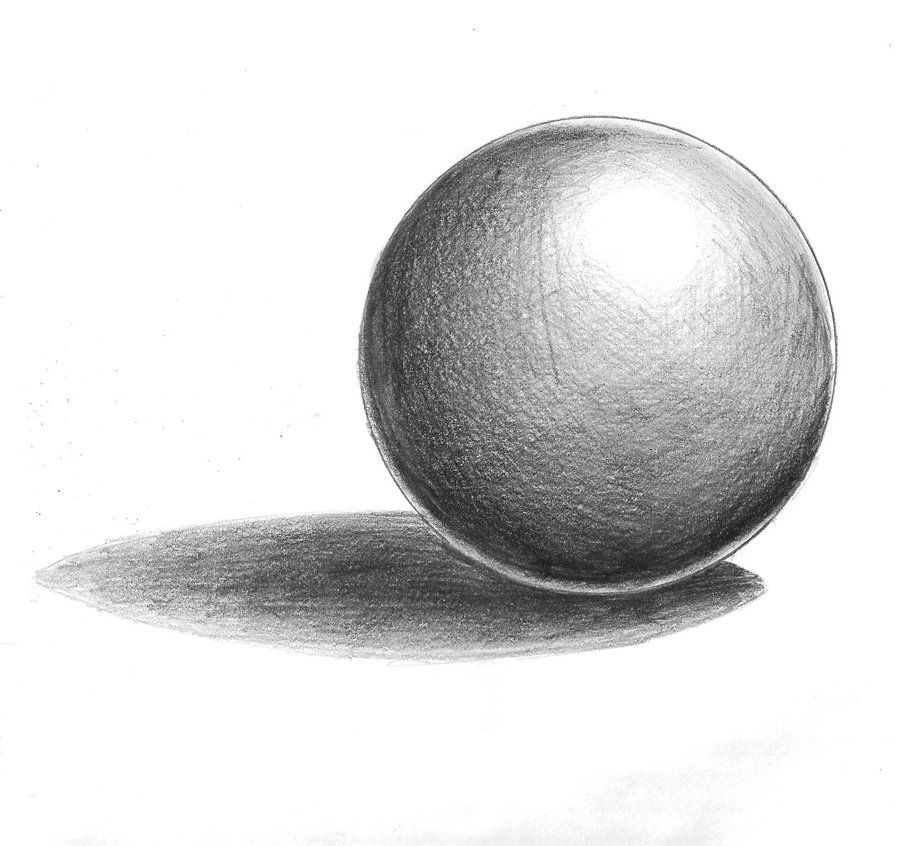
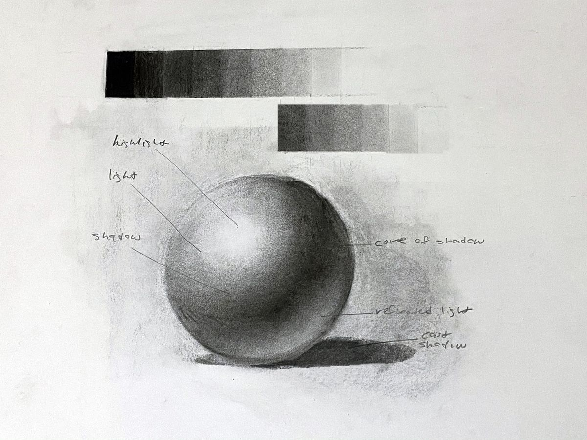
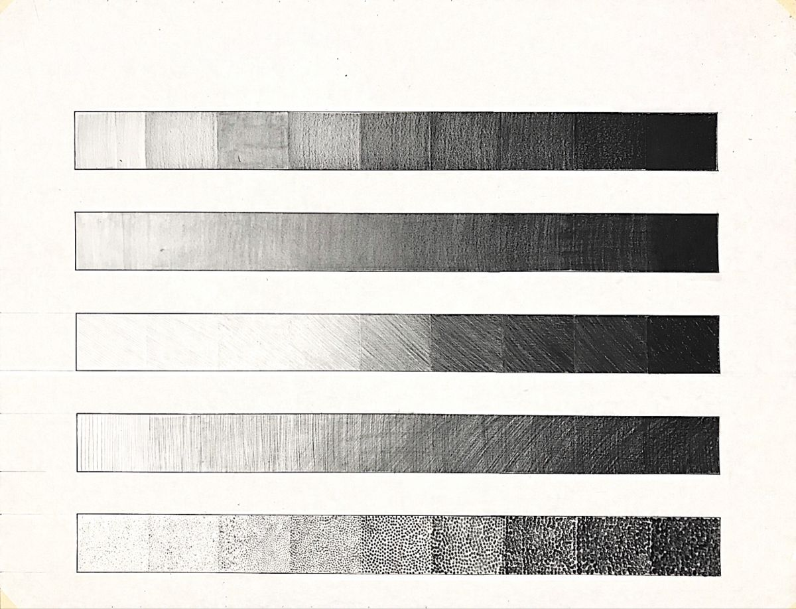
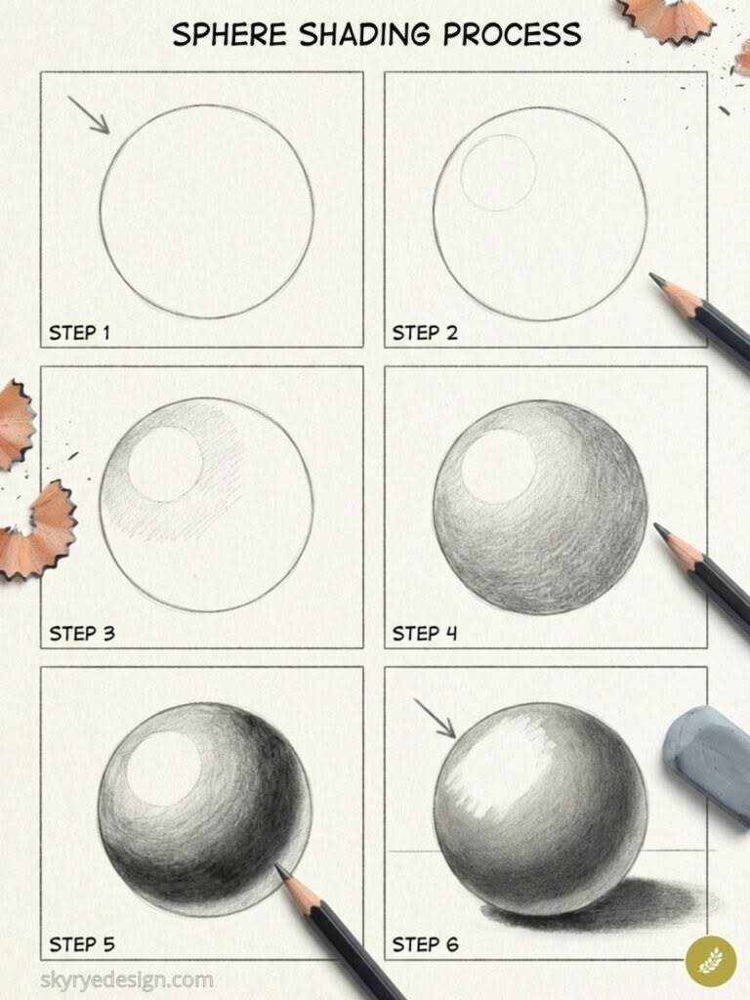

Visual Art I · Shape & Value
Light and dark are what make a flat drawing look real.
Look closely
Vocabulary
How light or dark something is. Not the color. Just light and dark.
Lightest light
Darkest dark
Vocabulary
The difference between the lights and the darks.
Whitest whites next to blackest blacks. Looks bold and 3D.
Everything is a middle gray. Looks soft and flat.
The five parts of light

Highlight: where the light hits directly. Brightest spot.
Midtones: the light and shadow grays as the form turns.
Core shadow: the darkest band on the object itself.
Reflected light: light bouncing back near the edge.
Cast shadow: the shadow the object throws on the table.
Word wall
How light or dark something is.
The difference between lights and darks.
The brightest spot, where light hits.
The grays between light and dark.
The darkest band on the object.
Light bouncing back near the edge.
The shadow it throws on the table.
Parallel lines. Closer = darker.
Lines that cross. More layers = darker.
Dots. More dots = darker.
Activity 1 · 15 minutes
Pick one mark: lines, cross-hatching or dots. Go from spread out to packed tight across 5 boxes.
Even pressure, no visible lines. Push for a true black.


Activity 2 · Rest of class
1
Draw a light circle. Arrow = light.
2
Outline it lightly. Keep it white.
3
Shade softly, away from the light.
4
Build grays around the curve.
5
Go darker. Save a light rim.
6
Blend, then ground it on the table.
Check yourself: a clear highlight, a true dark, all five parts of light?
Done early?
Three faces, three values: light, middle, dark.
Shade in strips from tip to base.
Same sphere, light from the other side.
Exit ticket
Label the five parts of light on your sphere.
Where we're headed
Foil is all value: bright highlights right next to deep darks.